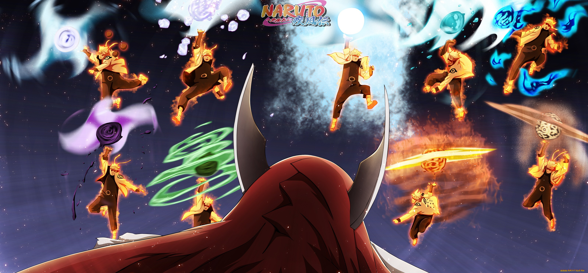

Опрос про аниме Наруто/Боруто
Первый вопрос: В какой серии Наруто научился использовать технику теневого клонирования?
В первой
Во второй
В третьей
Второй вопрос: Как завут этих двоих?
Забуза и Шизуне
Момошики и Рин
Забуза и Хаку
Третий вопрос: Во сколько лет Наруто использовал свой первый Расен-Сюрикен и на ком?
В 16 на Какузе
В 17 на Ямато
В 16 на Какаши

Четвёртый вопрос: Во сколько лет Наруто использовал свой последний Расен-Сюрикен и на ком?
В 33 на Дельте
В 33 на Момошики
В 16 на Саске
Пятый вопрос: Сколько клонов способен призвать Наруто?
100
1000
1000+
Шестой вопрос: Кого убил Наруто первым?
Рокушо Аои
Белый зецу
Он никого не убивал
Cедьмой вопрос: Сколько было учитилей/сенсеев у наруто?
3
5
6
Восьмой вопрос: Каким по счёту Наруто стал на должность Хокаге?
6
7
8
Ты прошёл мой тест по аниме Наруто/Боруто, поздравляю!